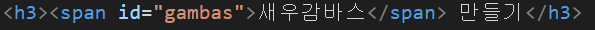

새우감바스 만들기

재료
새우 3컵, 마늘 1/2컵, 소금 톡톡, 올리브유 한컵반, 후추 톡톡, 페페론치노 4~5개
조리과정
- 마늘은 편으로 썰어서 준비한다
- 새우는 소금과 후추를 넣어 준비한다.
- 팬에 올리브유를 넣고 끓여준 뒤, 페페론치노와 마늘을 넣고 튀겨준다.
- 소금과 후추로 밑간을 한 새우를 올리브유와 함께 튀겨준다.
- 완성!
class가 여러곳의 영역을 지정했다면, id는 단 하나의 특정 영역을 지정하는데 사용합니다.
다시 한번 감바스를 만들어 보도록 하겠습니다.
재료
새우 3컵, 마늘 1/2컵, 소금 톡톡, 올리브유 한컵반, 후추 톡톡, 페페론치노 4~5개
조리과정
class에서 설명한 레시피와 다른점이 보이시나요?
맞습니다. "새우감바스 만들기"에서 "새우감바스"의 폰트와 색이 바뀌었습니다. 새우감바스 외의 그 어떤것도 붉은 궁서체의 글씨는 없습니다.
이와같이 id선택자는 유일무이한 단하나의 영역만을 지정하는데 사용됩니다.
위 사진처럼 태그에 id속성을 넣어사용하고, id명 앞에 "#"을 사용하여 css명령을 적용합니다.
참고
<span>은 글자를 묶는데 사용.일반적으로 <span>를 사용하여 글자를 묶은 뒤, span태그에 id,class속성을 부여하고, CSS에서 id,class선택자를 이용하여 CSS를 적용한다.